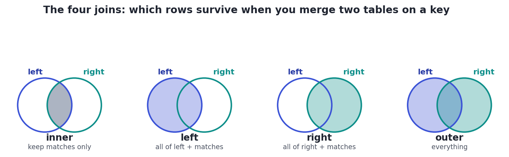

Joining Tables
Real data lives across many tables — combine them on a key with INNER, LEFT, RIGHT, and FULL joins.
Real databases never keep everything in one giant table. Customers live in a customers table, their orders in an orders table, products in a products table — each fact stored once, in its own place. That is good design, but it means the answer to almost any interesting question ("how much has each customer spent?") is spread across tables. JOIN is how you stitch them back together on a shared key. It is the skill that separates people who can pull a single table from people who can actually answer business questions — and it is on every SQL interview.
ConceptWhy data is split — keys
Storing each fact once is called normalization. To reconnect the tables you need keys. A primary key uniquely identifies a row in its own table — customers.id. A foreign key is a column in another table that points at that primary key — orders.customer_id holds the id of the customer who placed the order. A JOIN matches rows by comparing these: "the order's customer_id equals the customer's id". Here are our two tables:
import sqlite3
db = sqlite3.connect(":memory:")
db.executescript("""
CREATE TABLE customers (id INTEGER, name TEXT, country TEXT);
CREATE TABLE orders (id INTEGER, customer_id INTEGER, amount REAL);
INSERT INTO customers VALUES
(1,'Ada','US'), (2,'Blake','US'), (3,'Chen','CA'), (4,'Diego','MX');
INSERT INTO orders VALUES
(101,1,240), (102,1, 90), (103,2, 45), (104,3,220), (105,3,300);
""")
def run(sql):
cur = db.execute(sql)
cols = [c[0] for c in cur.description]
rows = cur.fetchall()
cell = lambda v: "NULL" if v is None else str(v)
w = [max(len(cell(v)) for v in [col, *(r[i] for r in rows)]) for i, col in enumerate(cols)]
show = lambda vals: " ".join(cell(v).ljust(w[i]) for i, v in enumerate(vals))
print(show(cols)); print(show(["-"*n for n in w]))
for r in rows: print(show(r))
print(">>> customers"); run("SELECT * FROM customers")
print()
print(">>> orders (customer_id points at customers.id)"); run("SELECT * FROM orders")>>> customers id name country -- ----- ------- 1 Ada US 2 Blake US 3 Chen CA 4 Diego MX >>> orders (customer_id points at customers.id) id customer_id amount --- ----------- ------ 101 1 240.0 102 1 90.0 103 2 45.0 104 3 220.0 105 3 300.0
Notice two things that make joins worth understanding deeply: Diego (id 4) has no orders, and Chen (id 3) has two. What happens to Diego, and does Chen appear twice? The answer depends on which join you choose.
Concept · the core choiceINNER vs LEFT — which rows survive
The join type decides what happens to rows that have no match on the other side:
- INNER JOIN keeps only rows that match on both sides. Customers with no orders, and any orphan orders, are dropped.
- LEFT JOIN (short for LEFT OUTER JOIN) keeps every row of the left table, attaching matches where they exist and filling the right-hand columns with
NULLwhere they don't.
Run both and compare. With INNER, Diego vanishes and Chen appears twice (once per order). With LEFT, Diego reappears with NULL amounts — which is exactly how you find "customers who have never ordered".
import sqlite3
db = sqlite3.connect(":memory:")
db.executescript("""
CREATE TABLE customers (id INTEGER, name TEXT, country TEXT);
CREATE TABLE orders (id INTEGER, customer_id INTEGER, amount REAL);
INSERT INTO customers VALUES
(1,'Ada','US'), (2,'Blake','US'), (3,'Chen','CA'), (4,'Diego','MX');
INSERT INTO orders VALUES
(101,1,240), (102,1, 90), (103,2, 45), (104,3,220), (105,3,300);
""")
def run(sql):
cur = db.execute(sql)
cols = [c[0] for c in cur.description]
rows = cur.fetchall()
cell = lambda v: "NULL" if v is None else str(v)
w = [max(len(cell(v)) for v in [col, *(r[i] for r in rows)]) for i, col in enumerate(cols)]
show = lambda vals: " ".join(cell(v).ljust(w[i]) for i, v in enumerate(vals))
print(show(cols)); print(show(["-"*n for n in w]))
for r in rows: print(show(r))
print(">>> INNER JOIN (only customers who have orders; Chen appears twice, Diego is gone)")
run("""
SELECT c.name, c.country, o.amount
FROM customers c
JOIN orders o ON o.customer_id = c.id
ORDER BY c.name
""")
print()
print(">>> LEFT JOIN (every customer; Diego kept with NULL amount)")
run("""
SELECT c.name, c.country, o.amount
FROM customers c
LEFT JOIN orders o ON o.customer_id = c.id
ORDER BY c.name
""")>>> INNER JOIN (only customers who have orders; Chen appears twice, Diego is gone) name country amount ----- ------- ------ Ada US 90.0 Ada US 240.0 Blake US 45.0 Chen CA 220.0 Chen CA 300.0 >>> LEFT JOIN (every customer; Diego kept with NULL amount) name country amount ----- ------- ------ Ada US 90.0 Ada US 240.0 Blake US 45.0 Chen CA 220.0 Chen CA 300.0 Diego MX NULL

INNER keeps only the overlap (rows matching on both sides); LEFT keeps all of the left table plus matches; RIGHT keeps all of the right; FULL OUTER keeps everything from both. Same logic in every database — only the keyword changes.RIGHT JOIN is just a LEFT JOIN with the tables written in the other order, and FULL OUTER JOIN keeps unmatched rows from both sides. (The SQLite build running these examples predates RIGHT/FULL, so the runnable code above uses LEFT — but the picture and the idea are universal, and most databases support all four directly.)
Worked exampleAnswering the real question — join, then group
"How much has each customer spent, and who has never ordered?" is a LEFT JOIN (keep everyone) followed by GROUP BY. Count with COUNT(o.id) (not COUNT(*)) so a customer with no orders scores 0, not 1 — because after a LEFT join their order columns are NULL, and COUNT(o.id) skips NULLs:
import sqlite3
db = sqlite3.connect(":memory:")
db.executescript("""
CREATE TABLE customers (id INTEGER, name TEXT, country TEXT);
CREATE TABLE orders (id INTEGER, customer_id INTEGER, amount REAL);
INSERT INTO customers VALUES
(1,'Ada','US'), (2,'Blake','US'), (3,'Chen','CA'), (4,'Diego','MX');
INSERT INTO orders VALUES
(101,1,240), (102,1, 90), (103,2, 45), (104,3,220), (105,3,300);
""")
def run(sql):
cur = db.execute(sql)
cols = [c[0] for c in cur.description]
rows = cur.fetchall()
cell = lambda v: "NULL" if v is None else str(v)
w = [max(len(cell(v)) for v in [col, *(r[i] for r in rows)]) for i, col in enumerate(cols)]
show = lambda vals: " ".join(cell(v).ljust(w[i]) for i, v in enumerate(vals))
print(show(cols)); print(show(["-"*n for n in w]))
for r in rows: print(show(r))
run("""
SELECT c.name,
COUNT(o.id) AS n_orders,
COALESCE(SUM(o.amount), 0) AS total_spent
FROM customers c
LEFT JOIN orders o ON o.customer_id = c.id
GROUP BY c.id, c.name
ORDER BY total_spent DESC
""")name n_orders total_spent ----- -------- ----------- Chen 2 520.0 Ada 2 330.0 Blake 1 45.0 Diego 0 0
The fan-out trap: a one-to-many join multiplies rows. Chen's single customer row became two rows after joining his two orders. That is fine when you then aggregate (as above), but dangerous if you SUM a customer-level value across the joined rows — e.g. summing a customer.credit column after this join would count Chen's credit twice. Rule of thumb: after any join, sanity-check that your row count is what you expect before you trust a SUM.
★ Key points to remember
- Real data is split across tables (normalization); a JOIN reconnects them by matching a foreign key to a primary key.
- INNER JOIN keeps only matching rows on both sides; LEFT JOIN keeps all left rows, filling missing right-side columns with
NULL. RIGHT=LEFTwith the tables swapped;FULL OUTERkeeps unmatched rows from both sides.- Find "rows with no match" via
LEFT JOIN ... WHERE right.key IS NULL(e.g., customers who never ordered). - The fan-out trap: a one-to-many join multiplies rows — safe when you then aggregate, dangerous if you
SUMa value from the "one" side. Check row counts.
customers to orders. A customer with no orders will appear…COUNT(o.id) instead of COUNT(*)?customers to their (many) orders, you SUM(c.credit_limit) and it looks too big. What happened?◆ Practice▸
customers(id,name) and orders(id,customer_id,amount), write a query that lists the names of customers who have never placed an order.Show solution & reasoning
SELECT c.name FROM customers c LEFT JOIN orders o ON o.customer_id = c.id WHERE o.id IS NULL; — LEFT JOIN keeps every customer; the ones with no match have NULL order columns, so WHERE o.id IS NULL isolates exactly the customers with no orders (the "anti-join").
Show solution & reasoning
SELECT c.name, COUNT(o.id) AS n_orders, COALESCE(SUM(o.amount),0) AS total FROM customers c LEFT JOIN orders o ON o.customer_id = c.id GROUP BY c.id, c.name ORDER BY total DESC; — LEFT JOIN keeps everyone; COUNT(o.id) gives 0 for no orders; COALESCE(SUM(...),0) turns the NULL total into 0.
◎ Deep dive: aliases, ON-vs-WHERE on outer joins, and multi-table / self-joins▸
Table aliases and qualifying columns. Once two tables are in play, always give them short aliases (customers c, orders o) and qualify each column (c.name, o.amount). It's required whenever a name is ambiguous (both tables have id) and makes every query readable. The JOIN ... ON <condition> names the match rule; USING (customer_id) is shorthand when the key column has the same name in both tables.
Where you put a filter changes an outer join. With a LEFT JOIN, a condition in the WHERE clause runs after the join and can secretly turn it back into an inner join: LEFT JOIN orders o ON o.customer_id=c.id WHERE o.amount > 100 drops the no-order customers (their NULL amount isn't > 100). If you meant "keep everyone, but only attach big orders", put that condition in the ON instead: ON o.customer_id=c.id AND o.amount > 100. ON filters during the join; WHERE filters after — a subtle, much-tested distinction.
Joining more than two tables, and self-joins. You chain joins: customers JOIN orders JOIN order_items JOIN products, each ON linking the next key. A table can even join to itself (a self-join) — e.g., an employees table with a manager_id pointing at another employee's id, joined e JOIN employees m ON e.manager_id = m.id to pair each person with their manager. Same mechanics, aliased twice.
Be fluent in three things: the difference between INNER and LEFT (matches-only vs keep-all-left-with-NULLs); the anti-join pattern LEFT JOIN ... WHERE right.id IS NULL for "records with no match"; and the fan-out danger of summing a one-side column after a one-to-many join. A bonus flex: knowing that a filter on the outer table belongs in ON, not WHERE, to preserve the outer join.